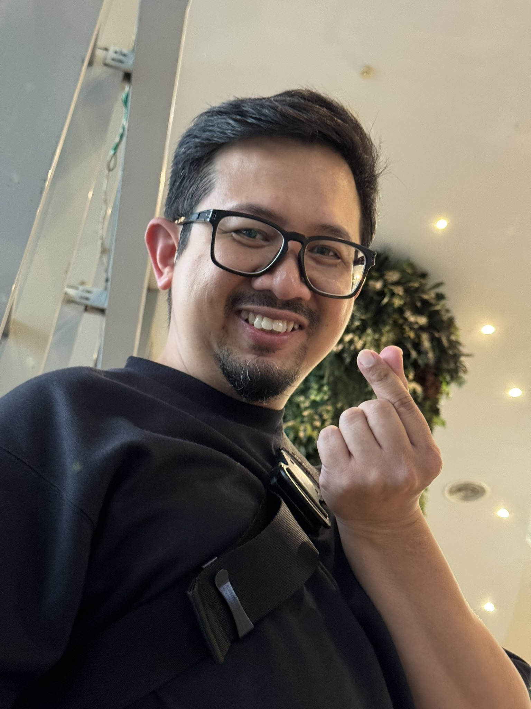
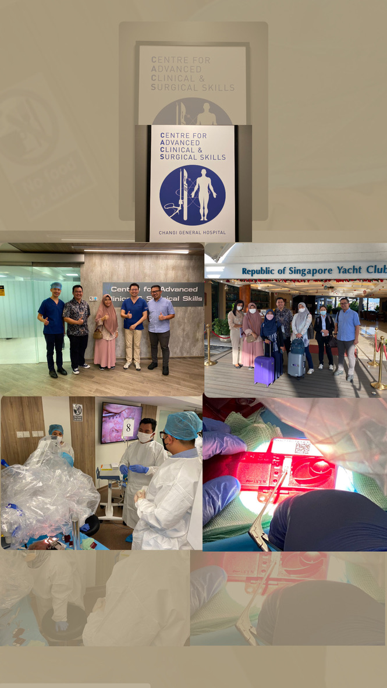

Rully Satriawan

Summary
I am an ENT Specialist with passion for technology and a keen interest in software and web development. As a dynamic ENT Specialist boasting six years of dedicated experience at Ahmad Yani State Hospital, i am eager to stay provide best medical services. My goal is patientcentric care, leveraging my medical expertise to enhance healthcare delivery. I am committed to continuous learning and professional growth, with a strong focus on integrating technology into healthcare practices.
Education
-
Medical Doctor - Universitas Islam Indonesia, 2001
-
ENT Specialist - Universitas Diponegoro, 2013
Experience
-
ENT Specialist - Ahmad Yani State Hospital, 2018 - Present
- Diagnosing and treating ear, nose, and throat conditions.
- Performing surgeries and procedures as needed especially in otology cases.
- Collaborating with other healthcare professionals to provide comprehensive care.
-
General Practitioner - Ahmad Yani State Hospital, 2010 - 2013
- Provided primary care services to patients.
- Conducted routine check-ups and health assessments.
- Referred patients to specialists when necessary.
Course
-
APSONS (Advanced Practical Skills in Otology and Neurotology Surgery) - Changi International Hospital, 2022
-
Temporal Bone Dissection Course - RSCM Hospital, 2020

Skills
- Otology
- Leadership
- Communication
- Teamwork
Other
Contact Me